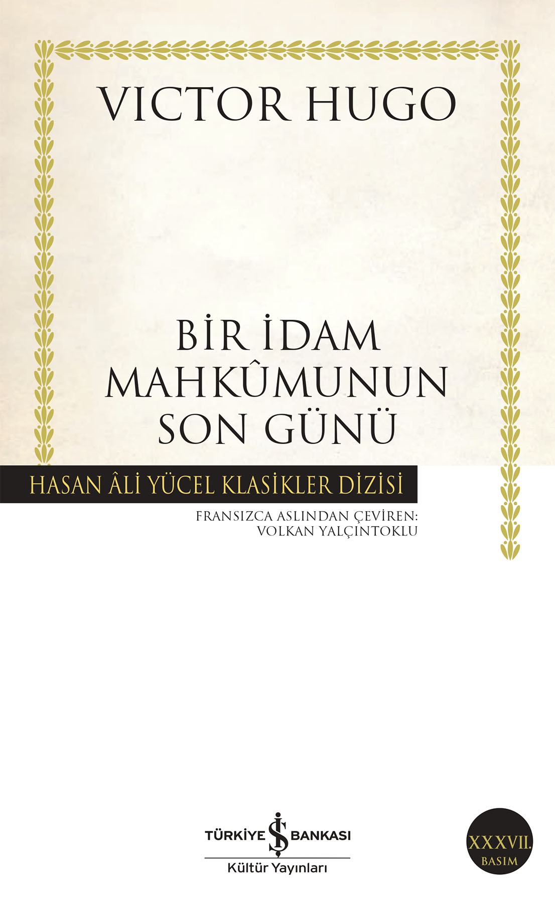

- Yazar: Oskar Wilde
- Sayfa Sayısı: 190
- İlk Basım Yılı: 2018
- Konusu:
Oscar Wilde (1854-1900): İrlandalı dahi yazar. Victoria döneminde edebi zekası, ince alaycılığı ve sıra dışı yaşantısıyla 19. yüzyıl estetizm hareketinin Britanya'daki en tanınmış temsilcisi haline geldi. Şiir, öykü ve oyunlarının yanı sıra Dorian Gray'in Portresi eseriyle ün kazandı. Dönemin katı ahlak anlayışının sonucu olarak cinsel yönelimi nedeniyle yargılanıp iki yıl hapse mahkum edildi. Özgürlüğüne kavuştuktan üç yıl sonra Paris'te yoksulluk içinde öldü. Dorian Gray'in Portresi, Wilde'ın zamanında büyük tartışmalar yaratan, pek az övgüye karşılık son derece sert eleştirilere maruz kalan, hatta yargılanırken aleyhinde delil olarak gösterilen tek romanıdır. Yazarın "sanat, sanat içindir" manifestosu olarak okunabilecek önsözünde de belirttiği gibi, kötülük ve erdemin sanatsal bir malzeme olarak kullanıldığı edebi eserlerin şahikasıdır. Ebedi gençlik ve güzellik dileği kabul olan ve insanı insan yapan değerlerden giderek uzaklaşıp yozlaşan Dorian Gray, Wilde'ın dünya edebiyatında eşine nadir rastlanan anlatımıyla ölümsüzlüğe kavuşur. Dorian Gray'in Portresi defalarca sinemaya uyarlanmış, pek çok sanat dalına da ilham vermiştir.
Kitabı Satın Almak İçin Tıklayınız
★ Bir İdam Mahkumunun Son Günü

- Yazar: Vıctor Hugo
- Sayfa Sayısı: 88
- İlk Baskı Yılı: 1829
- Konusu:
Victor Hugo, 1829 yılında yayımlanan Bir İdam Mahkûmunun Son Günü’nü yazdığında 26 yaşındaydı. Genç yazar, ölüme mahkûm edilen bir insanın son gününü büyük bir ustalıkla anlatarak kamu vicdanını etkilemeyi ve idam cezasına karşı bir protesto hareketi başlatmayı amaçlamış, başarılı da olmuştur. Bugün dünyanın birçok ülkesinde idam cezası yürürlükten kaldırılmışsa, böylesi bir cezanın hem trajik hem de insanlık dışı yanını daha 19. yüzyılın ilk yarısında gözler önüne seren Hugo’nun bunda hiç de azımsanmayacak bir payı vardır.
Kitabı Satın Almak İçin Tıklayınız